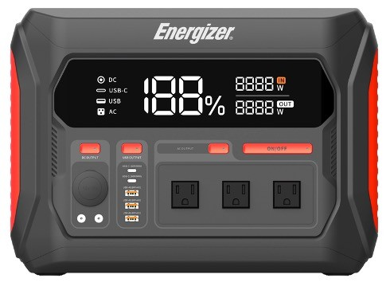

販売チャネル
実際の運用では、以下のような導線が使いやすいです。今はすべて仮リンクでまとめています。
公式オンライン
販売代理店
EC モール
法人向け窓口
- 公式サイト: [販売ページへ]
- 代理店: [代理店一覧へ]
- 法人: [法人購入のご案内]
実際の運用では、以下のような導線が使いやすいです。今はすべて仮リンクでまとめています。
未確定なら「準備中」とだけ置いて、後から差し替えやすくします。
実店舗、EC、法人窓口を分けると、見に来た人が迷いにくくなります。
ETC100W と PPS2300W1F を並べた比較表を後から追加しやすい構成です。
購入案内ページは、販売導線だけでなく「どこで使う製品なのか」を画像で見せると強くなります。

